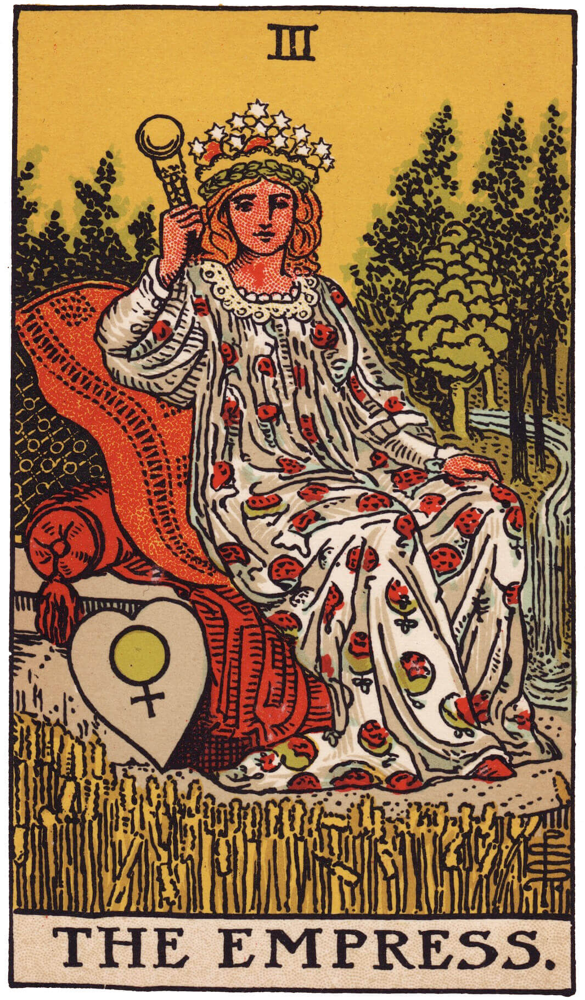

My Favourit Tarot Cards - Reider Waite Tarot Card Deck

'The Fool represents new beginnings, having faith in the future, being inexperienced, not knowing what to expect, having beginner's luck, improvisation and believing in the universe.'
'The Empress is traditionally associated with maternal influence, it is the card if you are hoping to start a family. She can represent the creation of life, romance, art, or new business.'

'This card is suggestive of stability and security in life. You are on top of things and everything in under your control. It is your hard work, discipline and self control that have bought you this far. It means that you are in charge of your life now setting up your own rules and boundaries.'

Strength predicts the triumphant conclusion to a major life problem, situation or temptation through strength of character. It is a very happy card if you are fighting illness or recovering from injury.'

'Unlikely that this card actually represents a physical death. Typically it implies an end, possibly of a relationship or interest, and therefore implies an increased sense of self-awareness.'